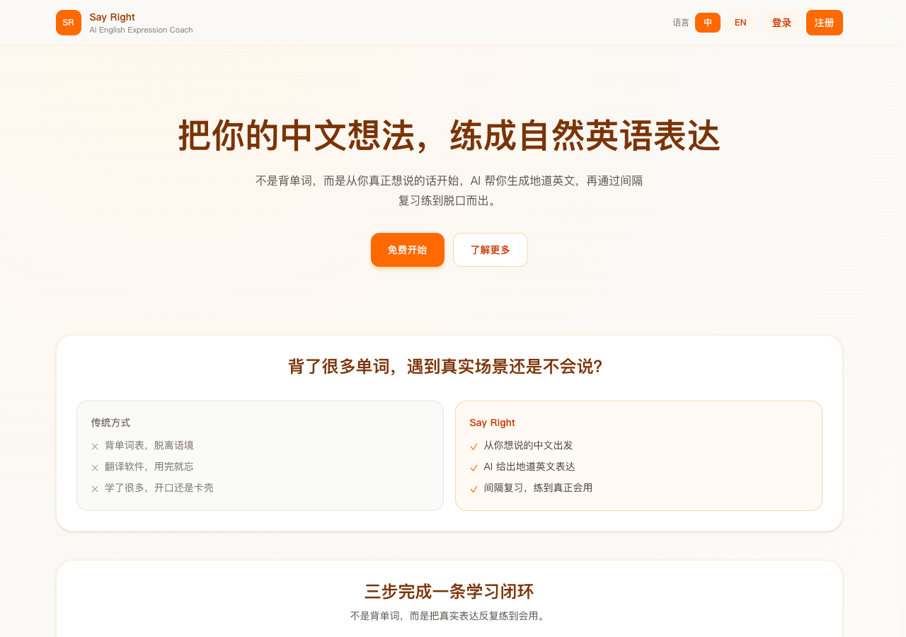

Say Right 上线一年，一直跑在 Vercel 上。它的流量不大，但每次练习都要调一次模型、写一次复习记录，冷启动和数据库连接加在一起，第一次请求常常要等两秒多。今年八月我把它整个搬到了 Cloudflare Workers，这篇记下过程里真正花了时间的几件事。
为什么要搬
原因只有两个：延迟和账单。Say Right 的用户大多在亚洲，而原来的函数和数据库都在美国东部。一次练习要来回三趟，光网络就占了一半时间。
我没有把「换平台」当成目标。如果只是延迟问题，换个区域就够了；促使我动手的是账单里那笔按调用时长计费的费用，它和练习次数一起涨，而大部分时长都花在等模型返回上。
冷启动没有想象中的问题
我原本最担心冷启动，结果这是最不需要操心的部分。Workers 用 V8 isolate 而不是容器，第一次请求和之后的请求几乎没有差别。真正要改的是那些默认「进程会活很久」的写法，比如在模块顶层建数据库连接：
// 之前：模块加载时建一次连接，指望进程一直活着
const db = new Pool({ connectionString: process.env.DATABASE_URL });
// 之后：每个请求从绑定里拿，不在全局保存状态
export default {
async fetch(req, env) {
const row = await env.DB.prepare("SELECT * FROM cards WHERE id = ?").bind(id).first();
return Response.json(row);
},
};改法很机械，但要一处一处找。我用 grep -rn "process.env" 列出所有读环境变量的地方，大约四十处，一个下午改完。
KV 的一致性才是坑
Workers KV 的文档写得很清楚：写入以后，其他地区可能要过一段时间才读得到新值。我读过这句话，但没有想到它会落在哪里。
读到旧值的那一分钟
我把「今天的复习队列」放在 KV 里。用户练完一张卡片，队列更新；如果他马上刷新页面，有时候刚练过的卡片又出现了。
KV is eventually consistent. Changes may take up to 60 seconds or more to be visible in other global network locations.
问题不在 KV，而在我把一个需要读到自己刚写的值的东西放进了一个不保证这件事的存储里。
改成 Durable Object
每个用户一个 Durable Object，队列放在它里面。同一个用户的请求总是落到同一个对象上，读写自然是一致的。代价是要理解它的计费方式，下一节会算到。

账单
搬家前后一个月的费用对比如下，用户量和练习次数基本持平：
| 项目 | Vercel + 托管数据库 | Cloudflare |
|---|---|---|
| 计算 | $20.00 | $5.00 |
| 数据库 | $7.00 | $0.00 |
| Durable Object | — | $3.10 |
| 合计 | $27.00 | $8.10 |
每月省下大约 19 美元。不多，但它不再随练习次数上涨，这一点比数字本身更重要。
搬完以后
- 第一次请求从两秒多降到三百毫秒左右。
- 「刚练过的卡片又出现」的反馈没有再收到。
- 本地开发换成了 wrangler dev，比原来起得快。
如果你的应用也是「流量不大、但每次请求都要等外部服务」的类型，按时长计费的平台会让你为等待付钱。这是这次搬家里我最想早点知道的一件事。